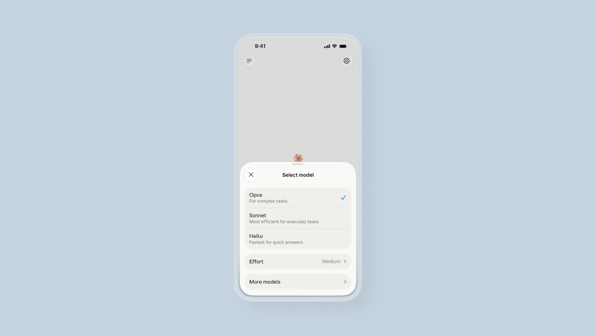
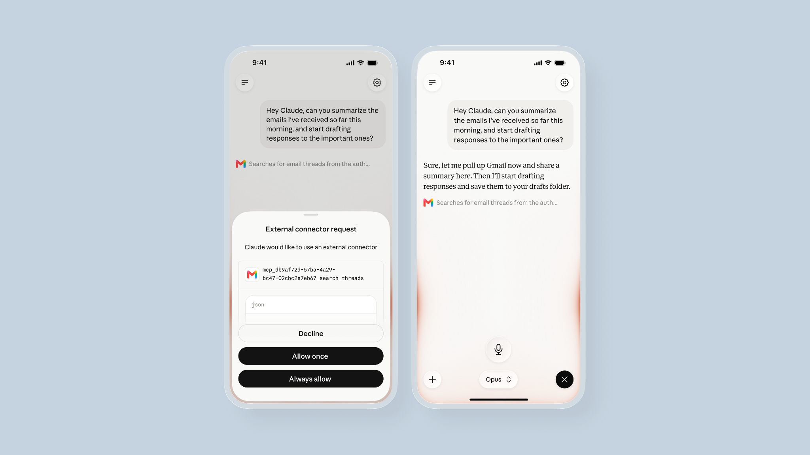
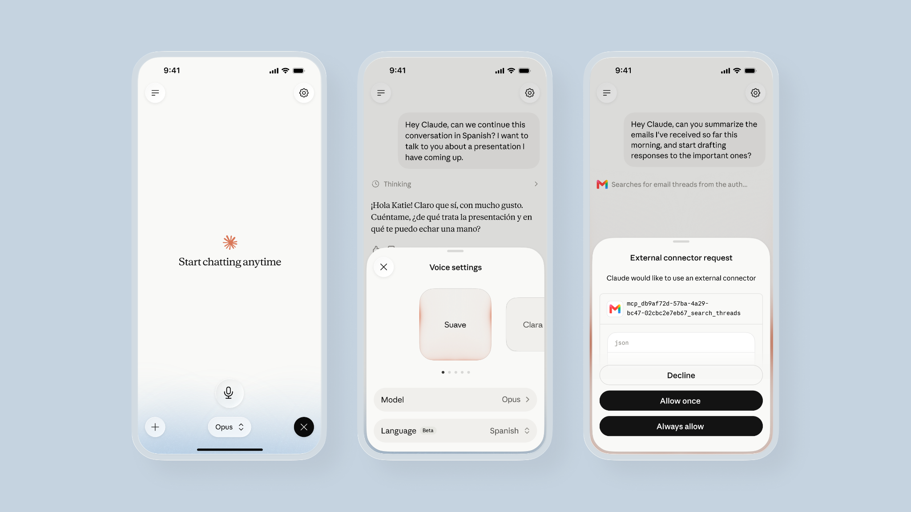
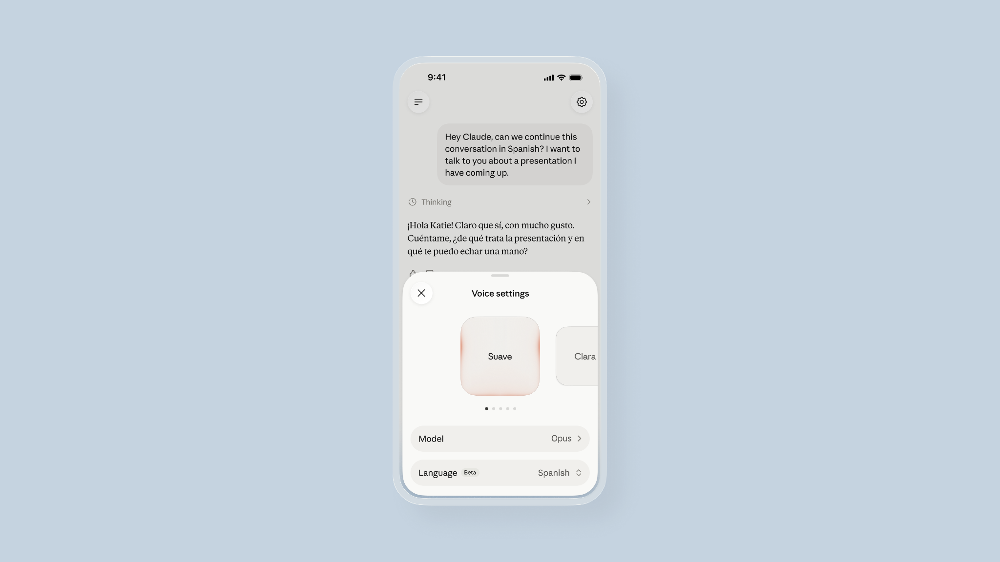

글로는 도저히 풀리지 않는 문제가 있다. 음성 모드는 중요한 발표를 앞두고 리허설을 하거나, 여러 제안 중 하나를 골라야 하거나, 자신이 밟아 온 과정을 소리 내어 되짚어 보거나, 새로운 아이디어를 구상할 때 쓰라고 만들었다.
올해 초 핸즈프리 대화 기능을 추가한 뒤, 사람들은 음성 모드를 짧은 질문 이상으로 쓰기 시작했다. 텍스트가 아니라 말로, 그것도 긴 세션에 걸쳐 실제 업무 문제를 풀어 나가기 시작한 것이다. 하지만 지금까지 음성 모드는 속도를 이유로 선택한 Claude Haiku 모델로만 작동했다. 대화는 빨랐지만, 늘 깊이 있지는 않았다.
이제 어려운 문제 해결을 위해 설계된 Opus와 Sonnet 모델을 음성 모드에서도 쓸 수 있다. 모델 선택기에서 대화 도중에 모델을 바꿀 수 있다. 음성 모드는 선택한 모델 중 가장 빠른 버전을 사용하므로 대화가 매끄럽게 이어진다. 기본값은 텍스트 채팅에서 마지막으로 쓴 모델이라, 처음부터 다시 시작할 필요 없이 음성과 텍스트를 오갈 수 있다.
더 뛰어난 모델과 함께라면, 아직 다듬어지지 않은 아이디어를 소리 내어 이야기하면서 실제로 무엇을 생각하고 있는지 정리해 나갈 수 있다. Claude는 곧바로 답을 내놓는 대신 후속 질문을 던지고 생각을 함께 쌓아 올린다. 음성 모드는 순서를 주고받는다. 즉 Claude가 듣고, 잠시 생각한 뒤, 대답한다.
시도해 볼 만한 몇 가지:
무엇을 할지 정했다면, Claude에게 실제로 해 달라고 요청하면 된다. 연결된 도구로 할 수 있는 몇 가지 예:

Claude는 연결된 도구를 사용하기 전에 반드시 허락을 구한다. 새 도구는 Claude 모바일, 데스크톱, 웹 앱의 설정 > 커넥터에서 연결할 수 있다.
이제 모든 요금제에서 훨씬 더 많은 언어를 음성 모드로 쓸 수 있어, 평소 생각하는 언어로 Claude와 대화하고 대화 도중에 언어를 바꿀 수도 있다. 지원 언어는 다음과 같다.

영어에서 원하는 언어로 바꾸고 싶다면 Claude에게 소리 내어 말하거나, 음성 설정의 언어 선택기에서 직접 고르면 된다.
Claude가 언어를 자동으로 감지하지는 않으므로, 영어에서 다른 언어로 바꾸려면 소리 내어 요청하거나 직접 선택해야 한다. 이전에 설정해 둔 언어는 그대로 이어지지 않으므로, 음성 모드용 언어는 따로 설정해야 한다.

이번에 업데이트된 음성 모드는 모바일, 데스크톱, 웹의 모든 채팅 사용자에게 베타로 제공되며, 특히 휴대폰에서 가장 잘 작동한다. 무료 요금제에서는 Claude Haiku, 연결 도구 1개, 그리고 모든 지원 언어를 쓸 수 있다. 유료 요금제에서는 확장된 모델과 연결된 도구를 모두 쓸 수 있다. 음성 대화도 평소 사용량 한도에 포함된다.

Claude 모바일 앱에서 음파 아이콘을 탭해 음성 모드를 써 보거나, 앱을 다운로드해서 시작해 보라.